我把「知识动画」做成了公开测试包：6 套模板，附完整安装教程
大家好，我是小白。
这段时间，我一直在用 AI 做知识动画。
说实话，这是这几年里， 对我帮助最大的一次 AI 工具升级 。不是那种“哦，挺有意思”的工具，是真的把活儿干完了的那种。
以前做一条视频，光后期加动画，我得花上好几天，最狠的一次 熬了整整一周 。找配乐、抠动效、调字幕，一遍遍对时间轴，经常熬到半夜。
现在呢，有时候真的 十几分钟就能出片 。不是我手速变快了，是我终于 不用干那些重复的活儿了 。
所以我干脆把整个流程，整理成了一个 Skill —— knowledge-animation-video 。
你只要把想讲的内容告诉它，它会先问你几个关键问题，再帮你拆脚本、搭画面、配音乐。分镜确认后，它会自己调用工具帮你出片。
最重要的是，我做了国产 Agent WorkBuddy 的兼容 ，让更多人可以 用很低的成本 做 AI 视频，希望对你有帮助。
它适合这几类人：
- 经常剪辑视频的自媒体博主
- 想把 PPT 变成直观视频的老师
- 需要天天给客户出方案的销售
如果你也经常被 PPT 和视频追着跑，应该能懂我这种松了口气的感觉。
下面我把完整做法和 6 种风格的真实案例都放出来。提示词也可以直接抄， 改几个词就是你自己的 。
有问题，可以在评论区给我留言，或者拉到文末的交流群里提问。
AI 时代，一起学习。
用 WorkBuddy 制作知识视频的步骤
完整流程一共 3 步，点击可跳转。文中的绿色复制按钮，点一下就能复制，再粘贴到对话框里使用。
第 1 步 先完成基础安装
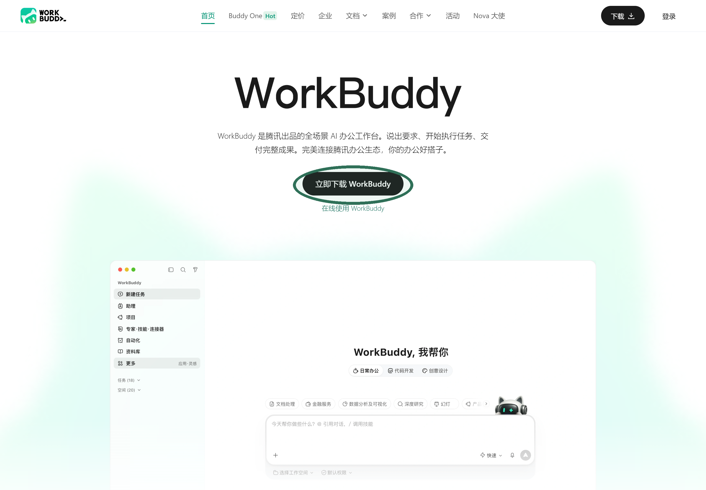
双击安装包，按向导确认协议、安装路径和快捷方式，完成后启动并登录。
打开 .dmg 后，把 WorkBuddy 拖入「应用程序」，再从启动台打开，不要直接在磁盘映像里运行。
登录后，打开的界面就是这样：左边是工作区，项目都在这里；主要工作板块就在对话框，写需求、传文件都在这一块。另外别忘记，不同的项目要选合适的模型。
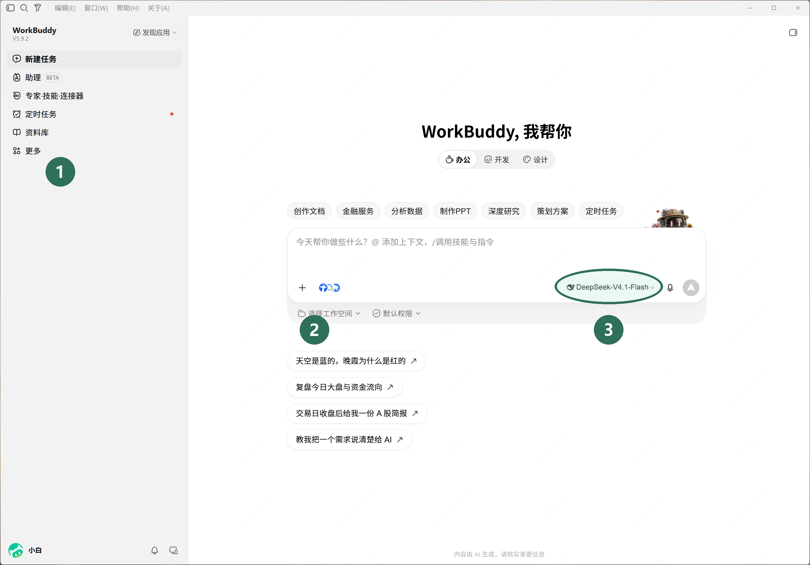
第 2 步 安装视频 Skill
现在我们开始准备安装视频skill
-
1
我们先在这里先选好模型
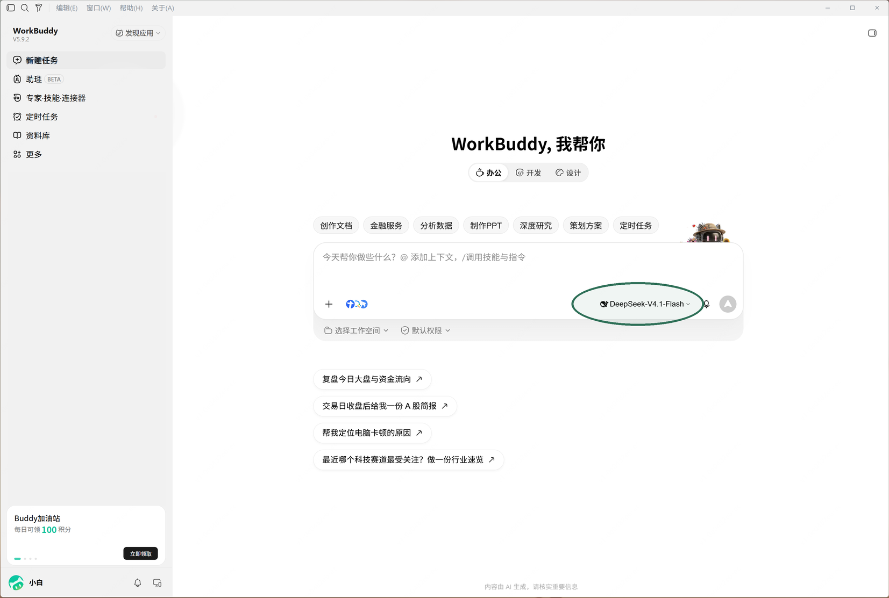
推荐使用 DeepSeek V4.1 flash，写脚本、读参考图、调用工具都够用，响应也快。
而且在做动画视频这块效果非常不错 -
2
安装 skill
接下来，你只需要把这个skill地址贴到这个对话框里，它就会自动帮你检查安装了。
第一次安装需要一点时间，先不用着急。
它会同步检查你的电脑里有没有 Node.js、Python、FFmpeg，以及后续生成、剪辑视频要用的工具；
缺什么，它会提示你技能地址和安装指令 复制地址 + 这句话 复制后是两条内容：第一行地址，第二行安装指令
以后要查看或停用，去「专家·技能·连接器」→「技能」→「已安装」就行，就是下面这个页面。
第 3 步 装好之后怎么用
这个skill的特点是， 即使是我们用这样一句话，它也可以帮你生成完整的动画视频 ：
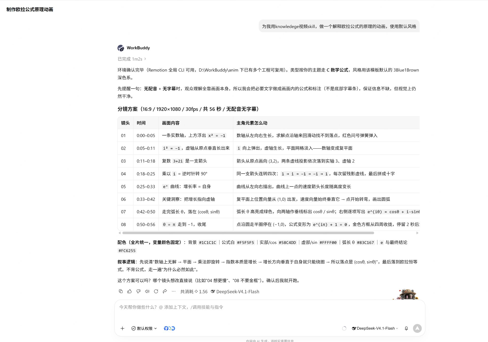
当我们给它这段提示词后，它会让我们做一些简单的选择，之后为你输出一个分镜设计表，这里你可以简单看一下，回复它“ 可以，请帮我开始制作 ”，它就会进入生成状态 复制这句话
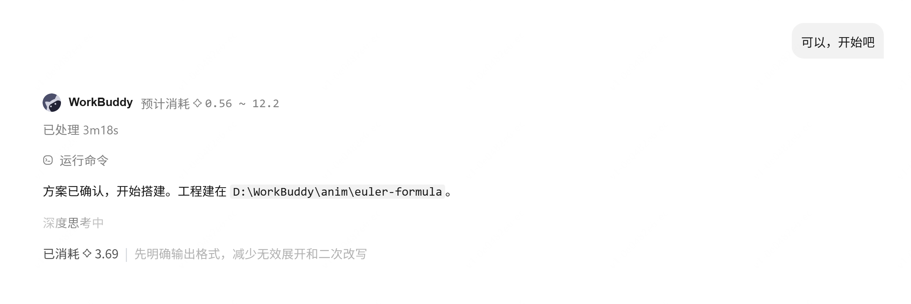
跑完就出片了。左边是它写的分镜表和注意事项，右边就是成片：
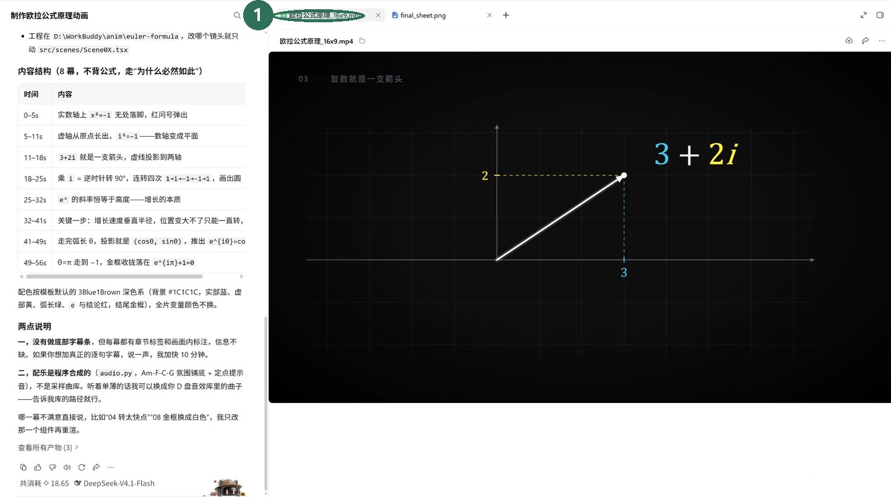
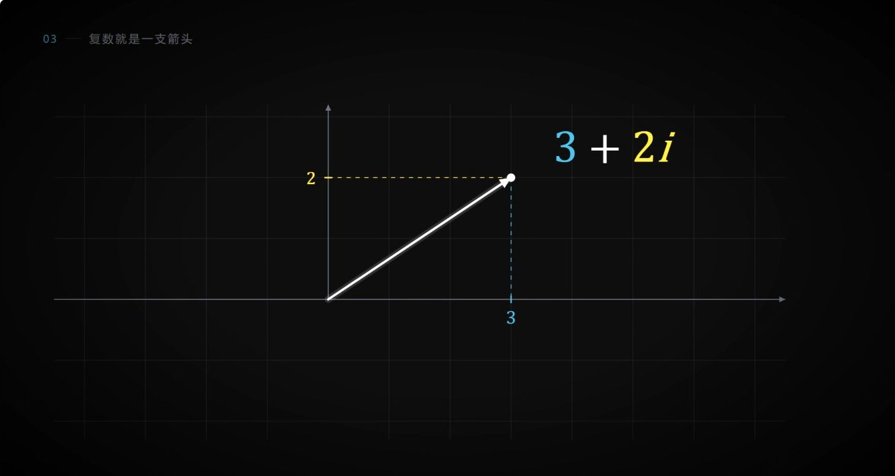
最实在的一点：整条片子跑完， 一共花了 18.65 个积分，不到一块钱 。
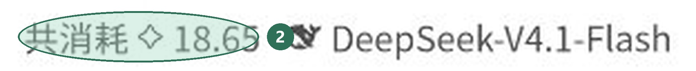
所以先拿一条短片试试水。十几秒的片子， 成本真的比你想象的低 。
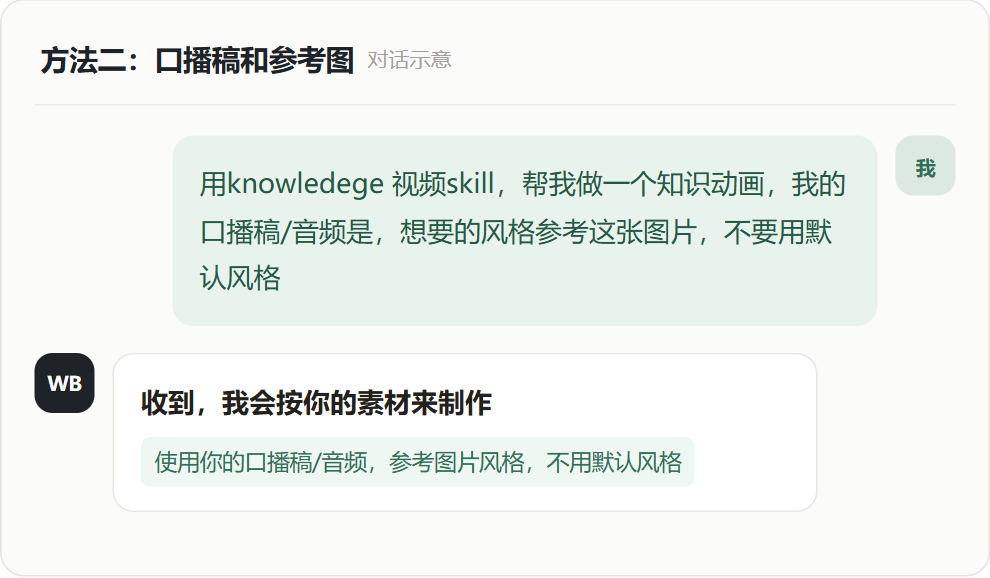
A｜3D 数据
数据新闻、行业报告、财报、产品发布
B｜手绘涂鸦
观点故事、读书笔记、心理与人文
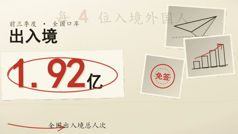
C｜数学公式
数学、物理、算法与逐步推导
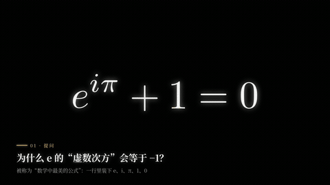
D｜信息图
流程、方法、系统架构与产品功能
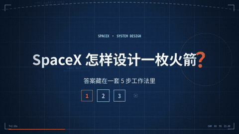
E｜复古档案
历史人物、事件、品牌与老物件
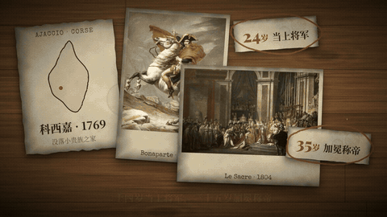
F｜美术馆
名画、文物、设计、建筑与摄影
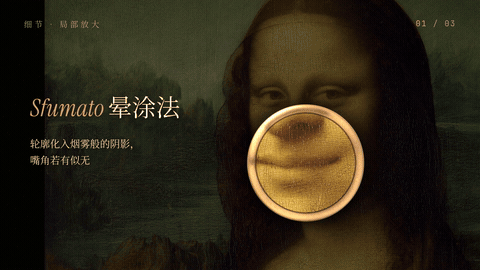
一句话记忆： 要震撼选 3D，要亲和选手绘，要推导选公式，要讲结构选信息图，讲历史选档案，看作品选美术馆。
进阶教程，想设计自己的风格？这样做
如果你有喜欢的风格，想要设计一个独特的模板，做法是：把下面这段提示词复制过去，再上传你喜欢的风格图片或者视频。
然后把素材一起发过去：一张图、几张图，或者一段视频链接都行。
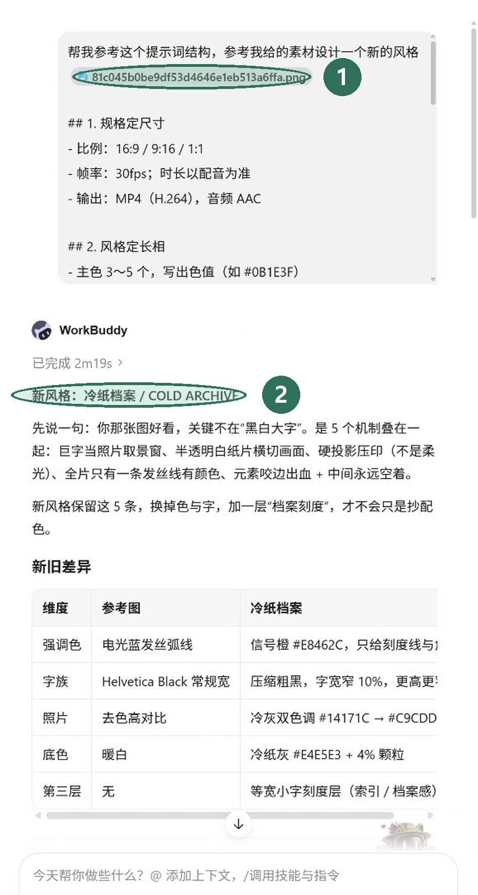
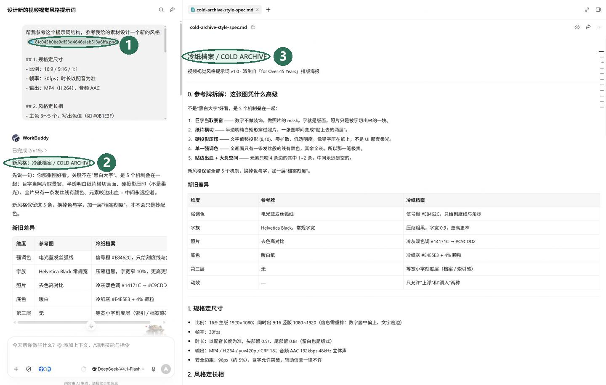
它不是随便给你改改配色，而是先把你这张图的 视觉机制拆开 ——哪条线是强调色、字重压到多少、底色冷到什么程度——再列一张「新旧差异」表告诉你它改了什么，最后按七块结构写成一份完整的模板文件。这份文件就是你以后说的「我自己的风格」。
做完这一版，你就有了自己的风格模板。你可以和WorkBuddy说，帮我把这个模板存为一个skill，下次可以复用
最后唠叨两句
写到结尾了，还有两件小事想跟你交代清楚。你可能会少走些弯路。
· AI 偶尔会发挥，数字、年代、术语这类内容，它写出来的不一定对。要对外发布的东西，关键处请自己再核一遍。
· 不同电脑、不同工具版本跑出来的效果会有差别。第一次没跑通，多半是环境还没配齐，别怀疑自己，回头看报错就行。
· 用在线配音时，文稿会送到语音服务那边；图片、字体、音乐和音效，商用之前请自己再确认一次授权，公版图也记得把署名留下。
· 这篇文章的文字、提示词和模板结构都是我自己写的，你尽管抄、尽管改、拿去商用也完全没问题，注明出处我会很开心。
· 案例里出现的名画和历史图片，来自维基共享资源这类可授权的渠道，工具运行时会自动记下作者和协议，别把署名删了就行。
· 工具用到的第三方组件都遵循各自的开源许可，你二次分发的时候把许可声明带上就好。
说到底就一句：怎么用是你的事，我尽量把坑填好，剩下的一起在路上见。
对我来说，知识动画的价值不是「炫技」，而是让为了把一件事讲明白，让更多人能看进去
这个skill我会持续迭代升级，可以关注我的视频号和公众号获取更新
期待看到你的第一条作品。
关注「小白姐姐」，别走散了
视频号
打开微信 → 发现 → 视频号 → 搜索「小白姐姐」→ 点击关注
获取更多 AI 实操教程、模板更新与作品演示
公众号「小白姐姐」
扫一扫，教程和后续更新都在这儿
「小白姐的 Ai 小分队」
扫码进群，有问题群里问